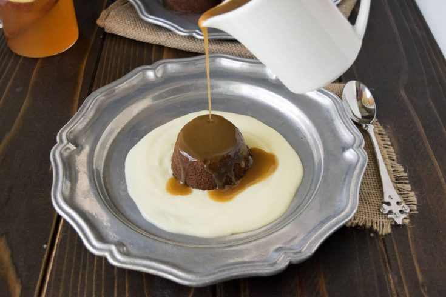

Sticky Toffee Pudding
Go Back

Sticky toffee pudding is served most prominently in the United Kingdom, but it's origins have a debated history spanning the world. From England to Canada,
all the way to Australia and New Zealand, many claim to have invented this delicious dessert. Despite it's popularity, the earliest claim to fame only goes back as far
as 1907 in Yorkshire, England. Regardless of who invented it first, sticky toffee pudding is considered a modern classic across the globe.
Sticky toffee pudding is a rich cake topped with toffee sauce and often served with vanilla custard or ice cream. They are a popular menu item in pubs and are served perfectly
warm and steaming. Filled with finely chopped dates, muscovado sugar, and butter, these cakes are a decadent experience you'll be sure to enjoy.
Ingredients
Pudding
- 1 Cup Dates, pitted
- 1 Cup Plain Flour
- 2 tsp Baking Powder
- 1 tsp Baking Soda
- 6 Tbsp Unsalted Butter
- 2/3 Cup Muscovado Sugar
- 3 Eggs
- 1/2 tsp Vanilla Extract
Toffee Sauce
- 2/3 Cup Unsalted Butter
- 1/2 Cup Dark Brown Sugar
- 1/2 Cup Light Brown Sugar
- 2 1/4 Cups Heavy Cream
Custard
- 3/4 Cup Heavy Cream
- 1/4 Cup Milk
- 4 Egg Yolks
- 2 tsp Vanilla Extract
- 2 1/2 oz Powedered Sugar
Steps
Pudding
- Preheat oven to 325°F/160°C.
- Grease an 8-inch pan and line with baking paper.
- In a saucepan, add 5/8 cup of water and the dates. Simmer for ~5 minutes,
until softened and beginning to break down.
- Remove from heat and cool slightly, then blend to a paste in a food processor.
- Stir in the baking soda and set aside to cool.
- Meanwhile, cream the butter and muscovado sugar together, until fluffy.
- Beat the eggs into the mixture, one at a time. Add the vanilla extract.
- Fold in the flour & baking powder.
- Fold in the fully cooled date mixture.
- Pour the mixture into the prepared pan and bake for 50 minutes.
Check the center, a skewer will come out fairly clean.
Toffee Sauce
- In a heavy saucepan, slowly melt the butter on low heat.
- Add the sugars and stir until dissolved.
- Stir in the cream and gently simmer for 3 minutes.
Custard
- In a separate heavy saucepan, gently heat the cream, milk, and vanilla extract,
until bubbles form around the edges.
- Meanwhile, whisk the egg yolks with the sugar until smooth in a heat-resistant bowl.
- Slowly add a small amount of the hot milk mixture to the egg yolks, whisking constantly.
- Gradually add the mixture back into the saucepan, whisking constantly.
- Cook, stirring the entire time, until the mixture thickens. It should coat the back of a spoon.
- To serve, turn the pan onto a plate and pour over half the toffee sauce. Save the other half in a pitcher
for serving. Cut into pieces and serve with extra sauce and custard. There won't be leftovers.
Additional Notes
- Muscovado Sugar is an unrefined brown sugar and has many substitutes, but all can be difficult to find.
Jaggery, panela, and sucanat are the best substitutes, and can be found in health & natural food stores, or online.
Dark brown sugar is the next-best substitute, but will slightly alter the taste of the dish.
- Whisking the custard constantly is critical. If allowed to set, curds can form in the eggs and will thicken
the mixture and become sweet scrambled eggs.
- If small curds do form towards the end of the process, they can be removed by straining
the mixture through a sieve.
Home Page